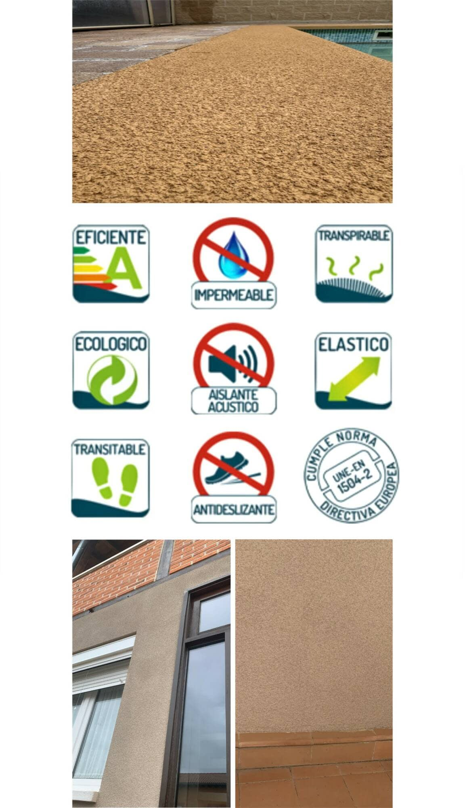

Corcho Proyectado
Aislamiento Térmico y Acústico Natural

¿Qué es el corcho proyectado?
El corcho proyectado es un revestimiento natural y ecológico que se aplica en una capa fina y uniforme. Se elabora a partir de partículas de corcho de alcornoque, combinadas con resinas al agua, cargas minerales y aditivos sin disolventes.
Soluciones de aislamiento para Fachadas, Suelos, Tejados, Cubiertas, Terrazas y Piscinas.
Solicitar presupuestoBeneficios naturales del corcho
La amplia gama de beneficios del corcho son el resultado de su estructura molecular y su composición.
Suberina (45%), que ayuda a su elasticidad.
Lignina (27%), que es el principal compuesto aislante del corcho.
Polisacáridos (12%), que le aporta su textura.
Taninos (6%), responsable de su color natural.
Seroides (5%), lo que hace que el corcho sea impermeable.
Cumple la norma UNE-EN 1504-2
Protección del hormigón: La norma garantiza que el corcho proyectado protege eficazmente las superficies de hormigón contra la humedad y otros agentes agresivos.
Impermeabilidad y transpirabilidad: Asegura que el corcho proyectado sea impermeable al agua líquida, pero a la vez transpirable, permitiendo que el vapor de agua salga del interior de la estructura, lo que es fundamental para la salud del edificio.
Resistencia: La norma también verifica propiedades como la resistencia a la temperatura y el deslizamiento, garantizando la durabilidad y seguridad del revestimiento en diversas condiciones.
Calidad certificada: Al cumplir esta norma, el producto demuestra que ha pasado por procesos de control de calidad que avalan su idoneidad para su uso en la construcción.
Acabados y Colores
Acabados:
Recubrimientos para fachadas, paredes, tejados, cubiertas, pilares, terrazas, suelos y piscinas.
Fino, aislante térmico natural muy útil para el revestimiento de acabado de los sistemas de aislamientos por el interior o como revestimiento de acabado de los sistemas de aislamiento por el exterior.
Grueso, perfecto para el revestimiento de acabado de los sistemas de aislamiento medioambientalmente sostenibles SATE (Sistema de Aislamiento Térmico por el Exterior).
Impermeable, las características de su composición lo convierten en el material perfecto para el revestimiento de cubiertas y terrazas no transitables, encapsulamiento de amianto y rehabilitación estética de edificios de uso industrial.
Amplia gama cromática a su elección.
Solicitar presupuesto